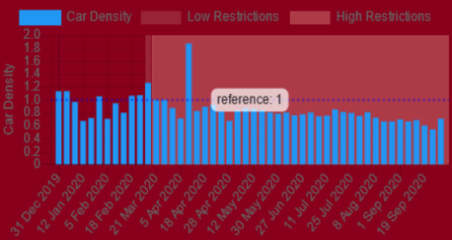

According to the data collected by EO Dashboard, the COVID – 19 pandemics have had an impact on the density of autos in international airports in the United States. The number of automobiles in airports has decreased significantly after the COVID-19 pandemics, as shown in (figure 1); nevertheless, this significant reduction began in March 2020 and has continued unabated since then. Since the lockdown due to the COVID-19, the traffic has vanished as the density of cars has decreased. This reduction in car density in the airport's by-parking areas substantially impacts two aspects: economics and air quality.
The decrease in automobiles has had a significant impact on the economy. Due to the COVID–19 crisis, more than one billion passengers were removed, representing a decline of 64.4% of global passenger traffic because of the travel limitations. Due to the drop in demand for automobiles, the vehicle service businesses have chosen to dismiss their employees to cut costs as much as feasible. In comparison to the number of workers in 2019, 10.05 % of workers have lost their employment, putting their families in poverty. Furthermore, the sector has been impacted since the total sales during the second quarter in 2020 declined by about 34%. This industry not only has an influence on itself, but it also has an impact on the other industries; the U.S. Department of transportation loses 43.5$ million a day in federal gas tax losses. The economic effect of this business has had a wide range of consequences that have harmed the community.
Air quality impact:Automobiles have a significant influence on air quality in general. The combustion of fossil fuels produces a large number of greenhouse gases, which has a significant impact on air quality; however, due to the COVID-19 pandemics, the amount of CO 2 generated has shown a 17% decrease in daily global CO 2 emission by early April 2020 compared to the mean level in 2019 as shown in figure 2. Following the global lockdown, there was a massive fall in NO2 about 45% to 50%. In urban areas in North America, NO2 levels were lowered by 19–28%. This was mainly due to a reduction in traffic emissions in urban areas. Furthermore, the Ozone Hole has been closed for the first time since 1980; yet, the industry has suffered huge losses; conversely, air quality has improved. Figure 3 shows the difference between how polluted the air quality was in 2015-2019 and how it is after the COVID-19 (after March 2020).